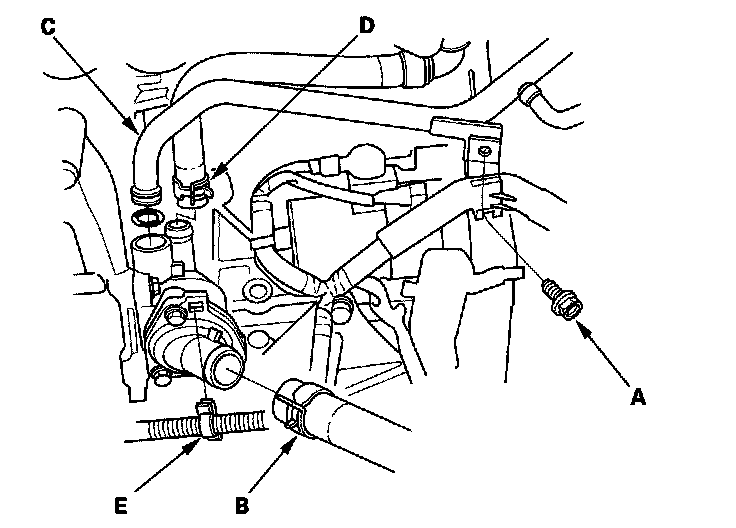
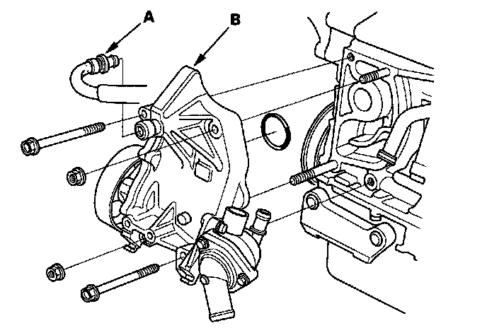
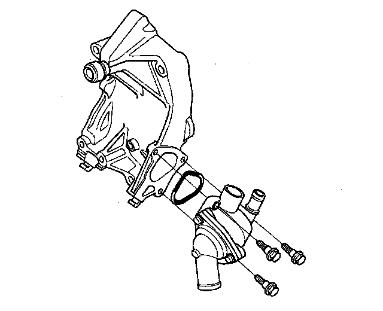
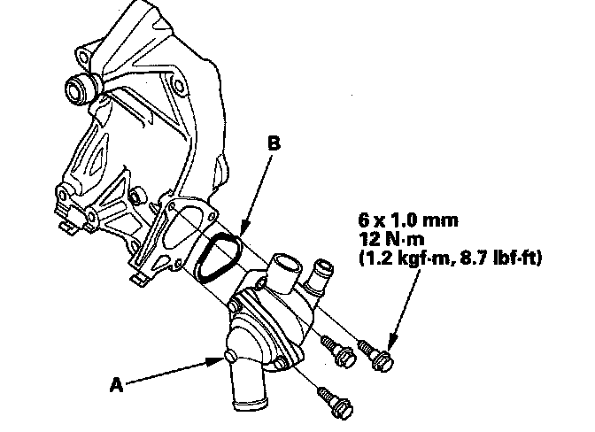
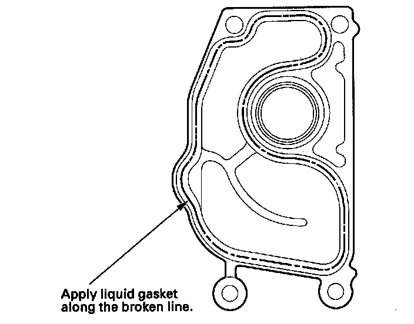
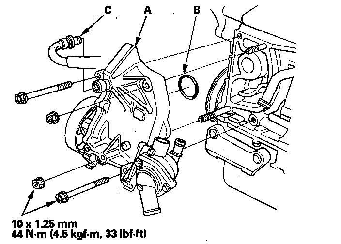
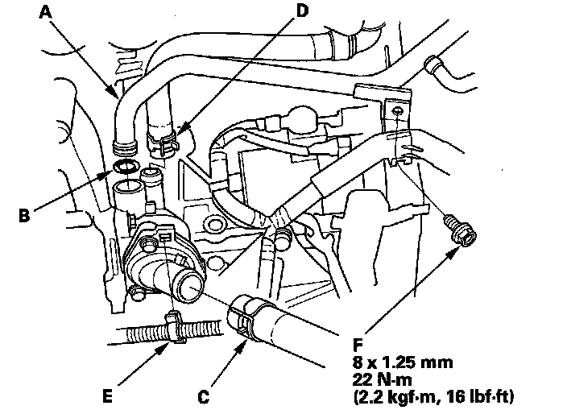

Water Passage Replacement
Water Passage Replacement1. Drain the engine coolant.
2. Remove the alternator.
3. Remove the condenser fan shroud assembly.
4. Remove the A/C compressor without disconnecting the A/C hoses.
5. Remove the intake manifold.
6. Remove a bolt (A) securing the connecting pipe.

7. Remove the lower radiator hose (B), connecting pipe (C), water bypass hose (D), and harness clamp (E).
8. Remove the positive crankcase ventilation (PCV) hose (A), then remove the water passage (B).

9. Remove the thermostat housing.

10. Remove the water pump.
11. Install the water pump.
12. Install the thermostat housing (A) with a new O-ring (B).

13. Clean, and dry the water passage mating surfaces.
14. Apply liquid gasket, P/N 08717-0004, 08718-0001, 08718-0002, 08718-0003, or 08718-0009, evenly to the engine block mating surface of the water passage.
NOTE: Do not install components if too much time has passed after applying the liquid gasket (for P/N 08718-0002, no more than 4 minutes, for all others, no more than 5 minutes). Instead, remove the old residue and reapply the liquid gasket.

15. Install the water passage (A) with a new O-ring (B).
NOTE:
^ Wait at least 30 minutes to allow liquid gasket to cure before filling the engine with oil.
^ Do not run the engine for at least 3 hours to allow liquid gasket to cure after installing the water passage.

16. Install the PCV hose (C).
17. Install the connecting pipe (A) with a new O-ring (B).

18. Install the lower radiator hose (C), water bypass hose (D), and harness clamp (E).
19. Tighten a bolt (F) securing the connecting pipe.
20. Install the intake manifold.
21. Install the A/C compressor.
22. Install the condenser fan shroud assembly.
23. Install the alternator.
24. Refill the radiator with engine coolant, and bleed the air from the cooling system with the heater valve open.